J'ai joué au Rodez Aveyron Football pendant 10 ans, atteignant le niveau des centres de formation et envisageant une carrière professionnelle. Cependant, j'ai choisi de me tourner vers la science des données, conscient des risques du sport et de l'importance des études pour mon avenir.
Data Engineer
Data Analyst
Informaticien
Data scientist
Analyse pertinente des données
Je transforme des jeux de données bruts en analyses claires et exploitables.
Visualisations impactantes
Je conçois des dashboards clairs, esthétiques et intuitifs pour révéler l'essentiel d'un coup d'œil, adaptés à chaque utilisateur.
Outils décisionnels sur mesure
Je développe des outils adaptés aux besoins spécifiques, alliant automatisation et optimisation.
Parcours académique & certifications
✓ BUT Science des données
Université Clermont-Auvergne, site d'Aurillac
Depuis Septembre 2022 · Parcours Visualisation et Outils Décisionnels
✓ Baccalauréat général
Lycée Alexis Monteil – Rodez
2021-2022 · Spécialités Mathématiques & NSI
✓ Certification Pix
Compétences numériques certifiées
2022
✓ Brevet des collèges – Mention Très Bien
Collège Joseph Fabre – Rodez
2018-2019
Solutions adaptées aux besoins réels
J'analyse les besoins des utilisateurs pour concevoir des outils efficaces.
Accompagnement technique structuré
J'apporte une expertise méthodique à chaque projet pour guider les choix techniques.
Développement orienté données
J’utilise les technologies modernes pour transformer les données en applications utiles, durables et évolutives.
Plus les moyens sont limités, plus l'expression est forte.
Chaque projet est une opportunité d'apprendre, de structurer et de valoriser la donnée.
Mon parcours en Science des Données m'a permis de développer des compétences techniques solides, toujours mises en œuvre dans des contextes réels : Traiter des données à des fins décisionnelles, Analyser statistiquement
les données, valoriser une production dans un contexte professionnel, développer un outil décisionnel. Mon objectif : proposer des solutions fiables, claires et adaptées à leurs utilisateurs.
Traiter des données à des fins décisionnelles
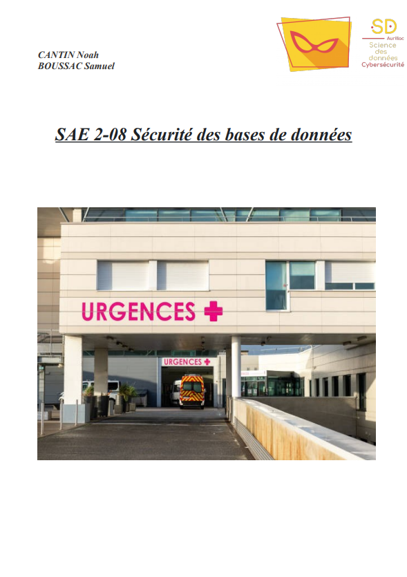
SAE Sécurité des bases de données
Chez moi, la sécurité des données n'est pas une option, c'est une priorité. À travers mon projet de SAE en gestion et sécurisation de bases de données,
j'ai conçu une architecture robuste respectant les principes fondamentaux de confidentialité,
d'intégrité et de disponibilité. De la gestion fine des droits utilisateurs à la mise en place de contrôles d'accès et de sauvegardes,
chaque aspect a été pensé pour garantir une base fiable, évolutive et protégée contre les menaces. Ce projet illustre ma capacité à allier exigence technique et rigueur méthodologique.
SAE Sécurité des bases de données
Création: Sep 2022 - Dec 2022UE1- S2Technologies: SQL
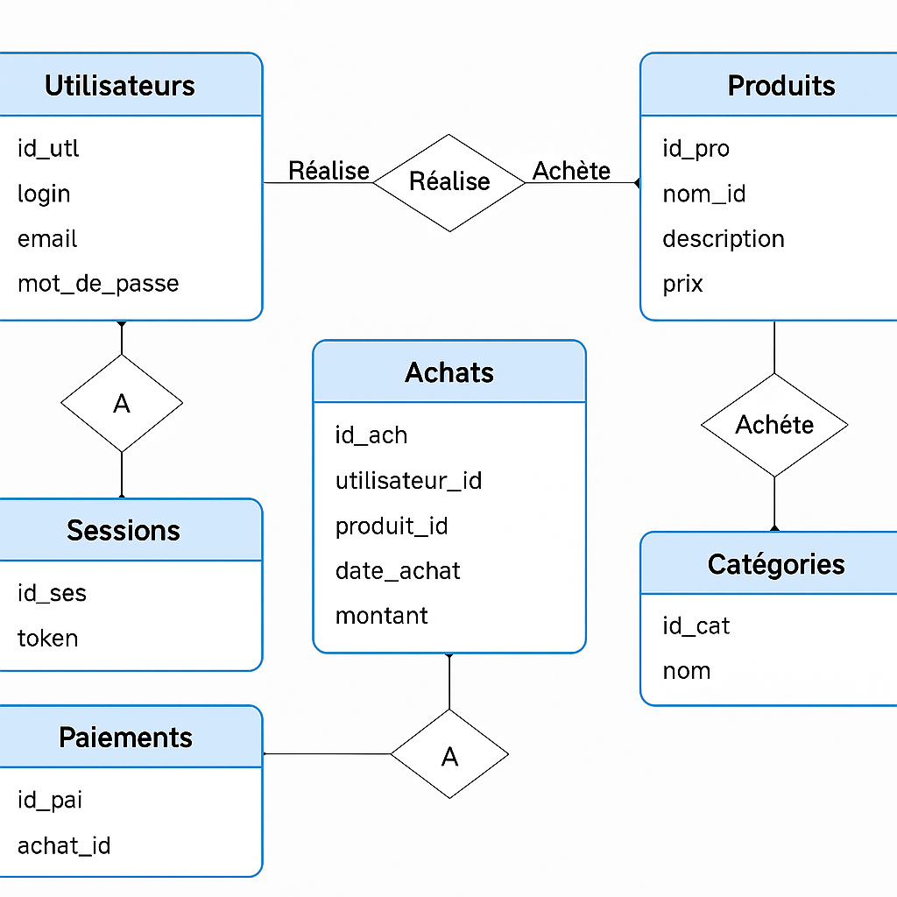
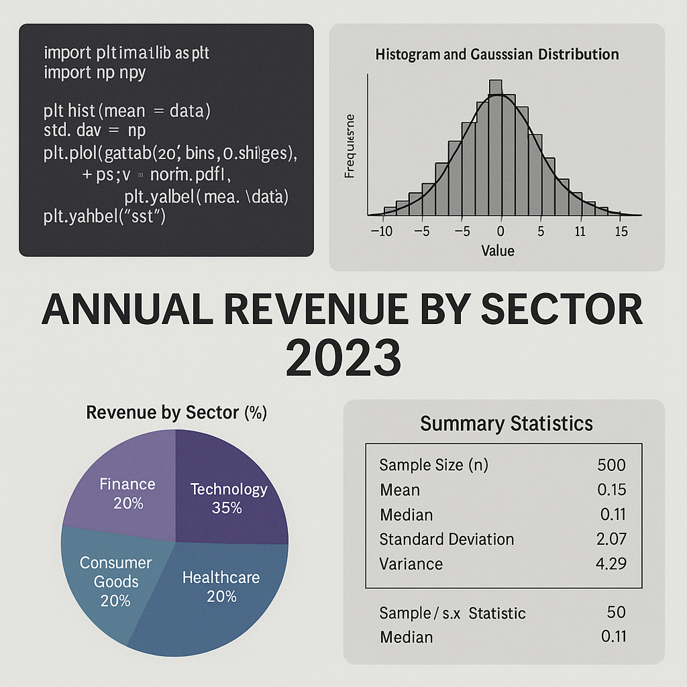
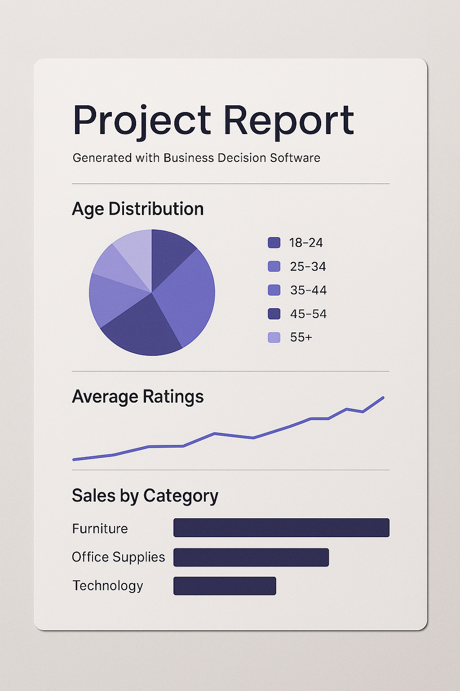
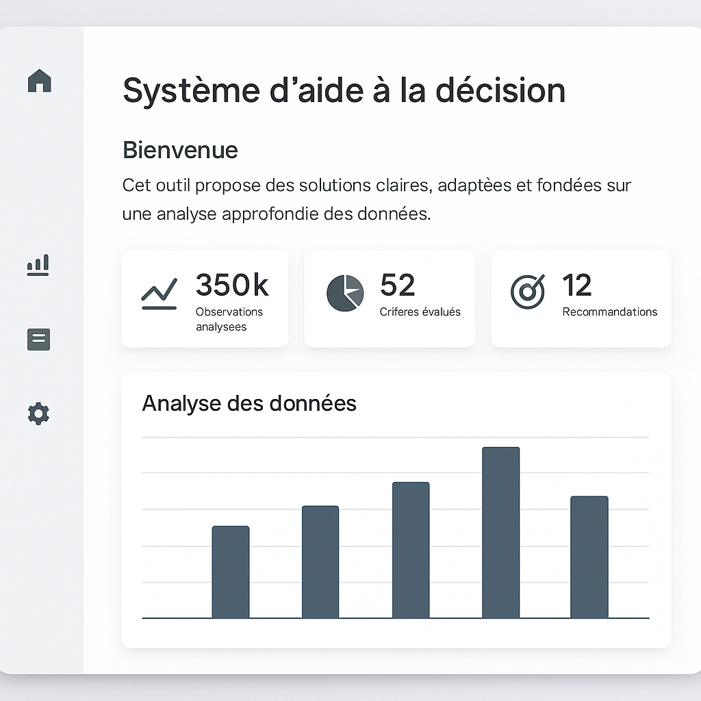
Présentation du projet
Dans le cadre de la SAE 2.08, j’ai participé à la conception, à la mise en place et à la sécurisation d’une base de données relationnelle utilisée dans un contexte professionnel simulé.
Le projet visait à garantir la cohérence, la robustesse et la sécurité des données, tout en facilitant leur exploitation à des fins décisionnelles. En collaboration avec mon binôme,
j’ai structuré la base selon les besoins exprimés, tout en intégrant des mécanismes de contrôle des accès, de journalisation et de sauvegarde.
Fonctionnalités principales
🧱 Modélisation relationnelle – Création d’un schéma logique cohérent (MCD/MLD), respectant les dépendances fonctionnelles et les contraintes d’intégrité.
🔐 Gestion des droits utilisateurs – Mise en œuvre de rôles spécifiques avec GRANT/REVOKE, afin de sécuriser l’accès aux tables selon les profils.
📑 Documentation technique – Rédaction d’un dossier complet expliquant les choix de modélisation, les scripts SQL, les procédures de sauvegarde/restauration et la politique de sécurité.
💾 Sauvegarde & restauration – Mise en place d’un plan de sauvegarde régulier, avec procédures de restauration testées.
📊 Exploitation des données – Création de requêtes SQL avancées pour fournir des indicateurs clés et visualiser les résultats.
🛡️ Audit & journalisation – Introduction de triggers pour tracer les modifications sur certaines tables critiques.
Résultats
✅ Mise en place d’une base de données sécurisée, conforme aux besoins métiers.
✅ Structuration efficace facilitant l’exploitation des données dans un contexte décisionnel.
✅ Développement de compétences concrètes en SQL, en gestion des accès et en documentation technique.
Dans ce projet tutoré, j'ai exploré l’univers des générateurs de nombres pseudo-aléatoires, leur fonctionnement, leurs vulnérabilités et leur importance en cryptographie. Ce projet mêle modélisation mathématique, tests statistiques, implémentations Python et analyse des faiblesses de plusieurs GPA comme Middle Square ou les générateurs congruentiels linéaires.
PTUT Générateur d’aléa
Janvier 2024 - Mars 2024UE1- S4Technologies : Python, R
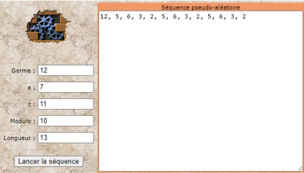
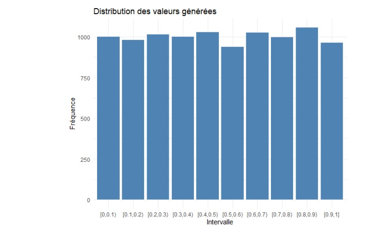
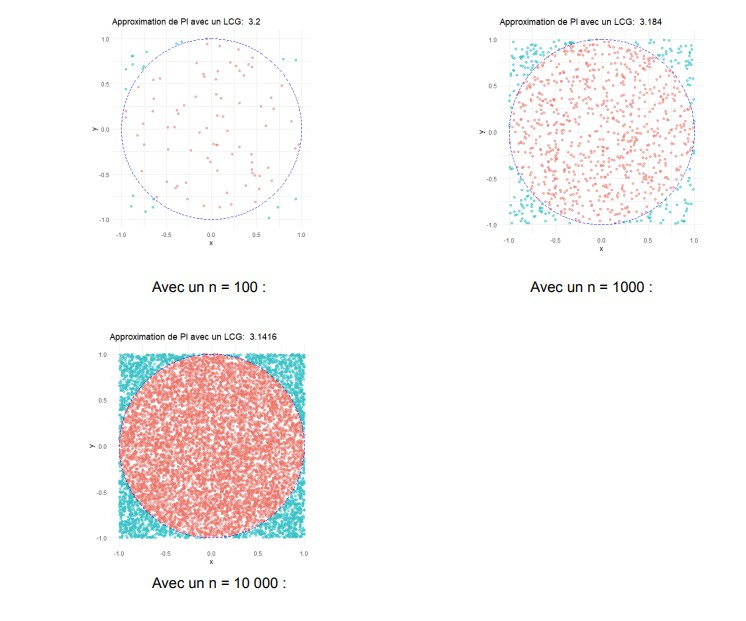
Présentation du projet
Ce projet a consisté à analyser et tester la sécurité de générateurs de nombres pseudo-aléatoires utilisés en cryptographie. J'ai étudié la différence entre GPA et générateurs véritablement aléatoires, mis en œuvre des tests statistiques (khi-deux, Monte Carlo), identifié les vulnérabilités de certains GPA simples, et implémenté des outils d’attaque sur les générateurs faibles.
Fonctionnalités principales
📊 Test de khi-deux – Implémentation du test dans R pour vérifier l’uniformité de la distribution des GPA.
🧮 Estimation de π via Monte Carlo – Comparaison visuelle de la qualité d’un GPA par simulation.
🔐 Analyse de sécurité – Étude des vulnérabilités du GPA Middle Square et des générateurs congruentiels linéaires.
🧠 Implémentation Python – Génération et attaque de séquences avec stockage des résultats, estimation de cycles.
📁 Rapport détaillé – Explications théoriques, illustrations, tests et bibliographie complète.
Résultats
✅ Visualisation de la faiblesse de certains GPA comme Middle Square.
✅ Estimation correcte de π avec des GPA mieux calibrés.
✅ Rapport complet documentant la rigueur méthodologique et les limites rencontrées.
Conception de datawarehouse et reporting décisionnel
Dans ce projet fictif, j'ai rédigé un cahier des charges complet pour une entreprise de vente en ligne souhaitant développer un entrepôt de données décisionnel. Le projet couvre l’analyse métier, la conception d’un datawarehouse en étoile, la définition des vues et KPIs, et la modélisation des besoins pour les services Finance et Logistique.
SAE Outil décisionnel
Janvier 2025 - Mars 2025UE1-S6Technologies : SQL, Power BI, LibreOffice Base
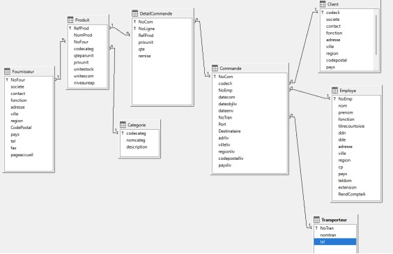
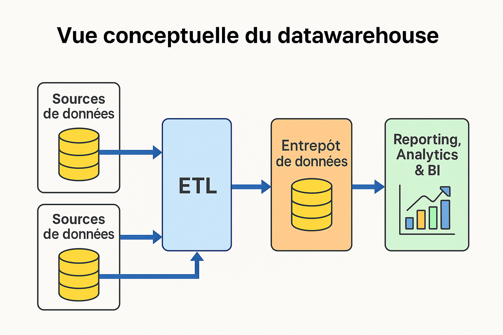
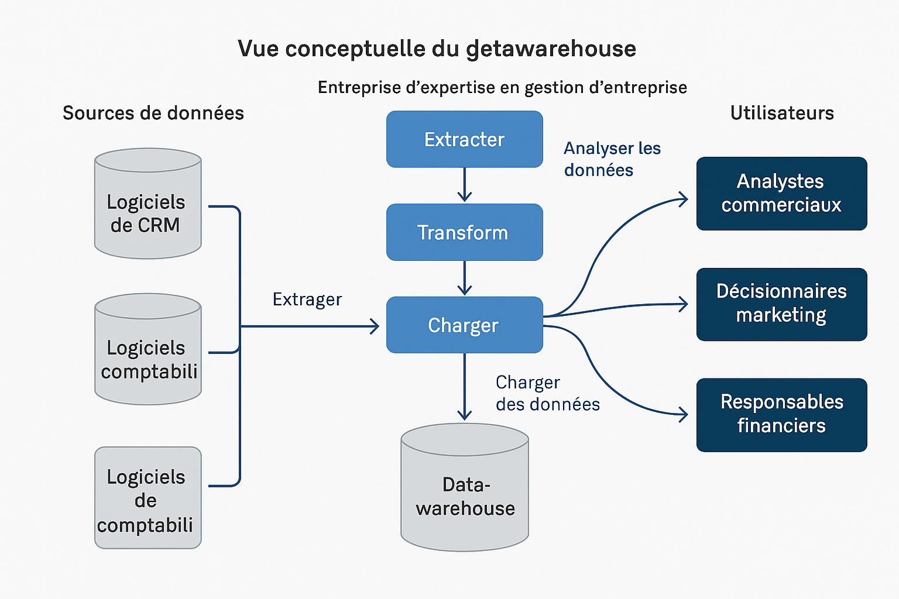
Présentation du projet
J'ai travaillé sur la conception complète d’un cahier des charges dans le but de développer un outil décisionnel fictif pour "Mig Corporation", une entreprise spécialisée dans la vente en ligne. Le projet couvre la modélisation des données existantes, la conception d’un entrepôt de données adapté, l’optimisation des requêtes analytiques, ainsi que la réflexion sur les indicateurs clés pour les décideurs.
Fonctionnalités principales
🧱 MCD & Datawarehouse – Modélisation relationnelle des données source et du schéma en étoile du futur entrepôt.
🧮 Tables de faits & dimensions – Conception de tables SQL structurées pour supporter les analyses multidimensionnelles.
📑 Spécifications SQL – Rédaction des scripts de création de vues analytiques et de tables pour l’ETL.
📊 Indicateurs métiers – Définition d’indicateurs clés pour les services finance et logistique (chiffre d'affaires, retards de livraison, etc.).
📁 Livrables détaillés – Rapport complet, incluant infrastructure, sécurité, accessibilité, suivi, phases du projet, et plan de maintenance.
Résultats
✅ Cahier des charges professionnel respectant les normes BI et techniques.
✅ Modélisation rigoureuse des processus décisionnels.
✅ Documentation complète permettant à un développeur de déployer l’outil.
Étude et implémentation simplifiée de l'algorithme de Google
Ce projet tutoré visait à comprendre, modéliser et implémenter l’algorithme PageRank de Google. À l’aide des langages Python et R, nous avons reproduit une version simplifiée de l’algorithme, exploré les fondements mathématiques et évalué son impact sur le web.
PTUT PageRank
Avril - Juin 2023UE1-S2Technologies : Python, R
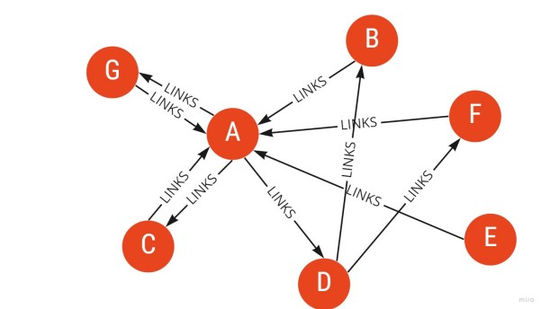
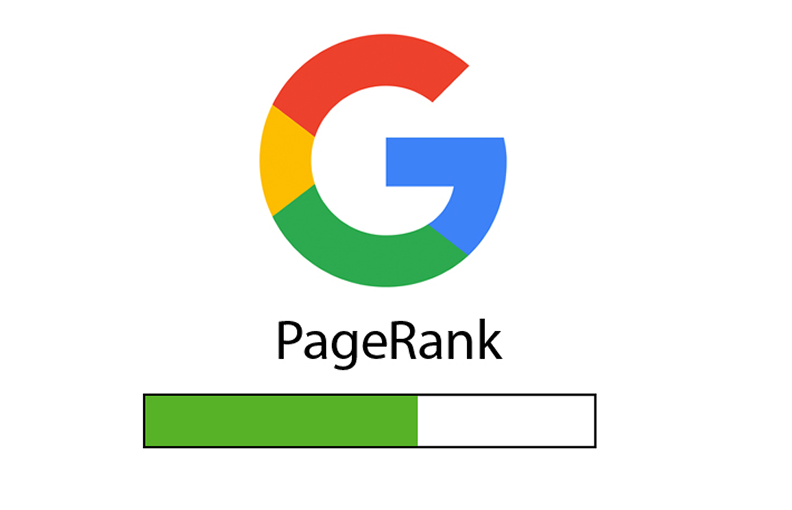
Présentation du projet
Dans ce PTUT réalisé en groupe, nous avons étudié en profondeur l’algorithme PageRank, fondement du moteur de recherche Google. Après avoir formalisé la logique probabiliste et linéaire sous-jacente (modèle de surfeur aléatoire, matrices de transition, convergence par itération), nous avons implémenté notre propre version en Python et R. Le projet s’est conclu par un rapport détaillé incluant des cas d’application et une évaluation critique du rôle de PageRank sur le web moderne.
Fonctionnalités principales
📊 Implémentation en R & Python – Reproduction de la matrice stochastique et itérations de convergence pour simuler le rang des pages.
🧠 Étude mathématique – Décomposition du fonctionnement : graphe, vecteurs propres, matrices de Markov, convergence.
📁 Rapport complet – Présentation détaillée du contexte, fonctionnement, implémentation et impact de PageRank.
Résultats
✅ Calcul du rang des pages dans plusieurs exemples de graphes.
✅ Convergence observée en moins de 50 itérations pour des structures simples.
✅ Compréhension complète du fonctionnement du premier algorithme de Google.
Étude de circulation et impact d'une nouvelle intersection
Projet réalisé dans le cadre du BUT Science des Données, analysant l’évolution du trafic urbain à travers des séries temporelles, suite à l’ajout d’une 4ème intersection. Analyse menée en R avec visualisation, lissage et détection de cassure.
Étude de Séries Chronologiques - Circulation et Intersection
Durée : Oct 2023 - Nov 2023UE2 S4Technologies : R, ggplot2, dplyr
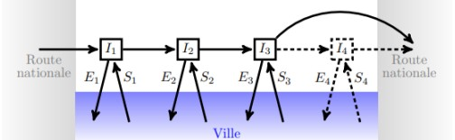
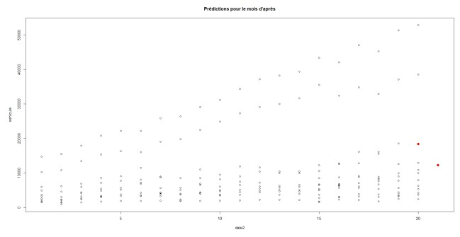
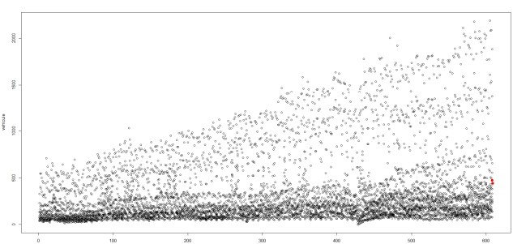
Objectifs
✔ Évaluer l’impact de l’intersection I4 (ajoutée le 01/01/2017) sur le trafic.
✔ Détecter les anomalies de circulation avant et après cette date.
✔ Réaliser des prévisions journalières et mensuelles du trafic.
Méthodologie
🔹 Calcul des flux d'entrée E1 à E4 via des relations sur I1-I4, N et S1-S4.
🔹 Application de divers lissages : exponentiel, moyenne mobile, logarithmique.
🔹 Détection de cassure par le test de Chow autour du 01/01/2017.
🔹 Modélisation des tendances et saisons pour la prévision (modèle additif).
Résultats
✅ Cassure confirmée statistiquement à la création de I4 (p-value < 0,05).
✅ Diminution du pourcentage de trafic sur I1-I3 après 2017, montrant un effet de délestage.
✅ Prédictions plausibles des flux pour le jour et le mois suivants.
Ce projet universitaire de fouille de données visait à extraire des connaissances pertinentes à partir d’un jeu de données réel. À l’aide d’algorithmes supervisés et non supervisés (K-Means, KNN, Random Forest…), nous avons mis en œuvre une chaîne complète d’analyse allant de la préparation des données jusqu’à l’interprétation des résultats.
Projet de Fouille de Données - Data Mining
Durée : Novembre 2024 - Décembre 2024UE2 S6Technologies : R
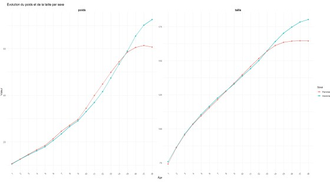
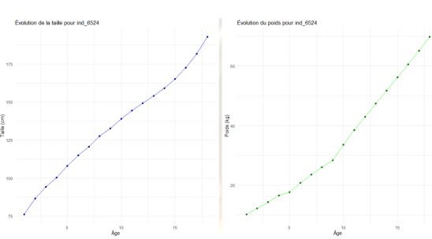
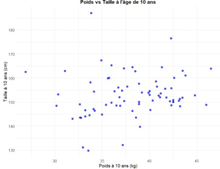
Objectifs
✔ Nettoyer et structurer un jeu de données complexe.
✔ Réaliser une classification supervisée et un clustering non supervisé.
✔ Identifier des variables explicatives via l’importance des features.
Approche
🔹 Preprocessing : détection des valeurs manquantes, normalisation, encoding.
🔹 Méthodes non supervisées : K-Means, PCA, dendrogramme hiérarchique.
🔹 Méthodes supervisées : KNN, SVM, Random Forest avec validation croisée.
🔹 Visualisations : heatmaps, scatterplots, courbes ROC et confusion matrix.
Résultats
✅ Score F1 de 0.92 avec Random Forest (modèle le plus performant).
✅ Découverte de groupes d’individus homogènes selon des critères significatifs.
✅ Rapport complet avec interprétation, limites et axes d’amélioration.
Code et livrables disponibles sur GitHub :
Data_Mining
Lien copié dans le presse-papier !
/app/index.html?project=kittle
Valoriser une production dans un contexte professionnel
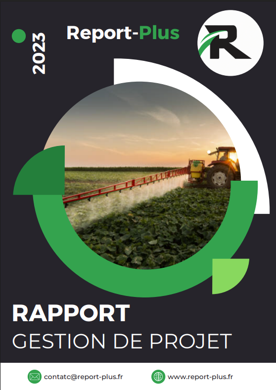
Gestion de Projet
Conduite de projet
Conduite de projet réalisé dans le cadre d’une commande fictive du Ministère de l’Agriculture. J'ai conçu une gestion complète de projet d’enquête publique. Ce projet allie gestion agile, outils de planification, communication client et production de livrables dans une démarche professionnelle.
RanJPT – Assistant intelligent pour la conduite de projet
Avril 2024 - Août 2024UE3 - S4Technologies : Google Forms, outils de Gantt, rapport PDF
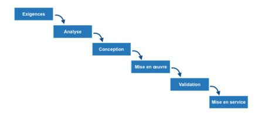
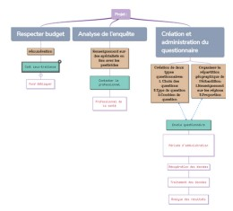
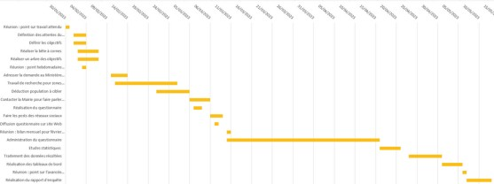
Présentation du projet
Dans ce projet fictif, notre équipe a simulé une prestation commandée par le Ministère de l’Agriculture sur l’impact des produits phytosanitaires. L’objectif : réaliser une enquête publique et produire un livrable professionnel, en respectant les standards d’un projet client. Nous avons piloté le projet via une démarche structurée (bête à cornes, WBS, Gantt, capitalisation) et rédigé un rapport vulgarisé à destination du grand public.
Étapes et livrables
📌 Démarrage – Identification des besoins, bête à cornes, arbre des objectifs.
📋 Planification – Élaboration du diagramme de Gantt, évaluation du budget et de l’échantillon.
🧪 Mise en œuvre – Conception d’un questionnaire Google Forms, stratégie de communication Facebook + JT.
📊 Analyse – Étude statistique des 8800 réponses obtenues (fictives), mise en évidence de corrélations santé/environnement.
📝 Clôture – Rédaction d’un rapport de vulgarisation scientifique, capitalisation d’expérience.
Résultats
✅ Simulation complète de gestion de projet client dans un cadre professionnel réaliste.
✅ Production d’un rapport lisible, structuré et adapté à la communication publique.
✅ Maîtrise d’outils de planification et de reporting (WBS, Gantt, rapport de mission).
Projet visant à créer un guide d’utilisation complet et illustré du logiciel Talend, destiné à des débutants en gestion de données, dans une logique de valorisation technique.
Mode d’emploi Talend – Projet de valorisation professionnelle
Durée : Janv 2024 - Mars 2024UE3 S4Technologies : Talend Open Studio, Java, PDF
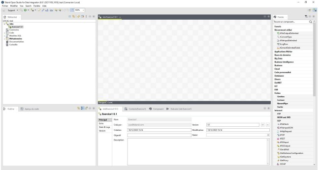
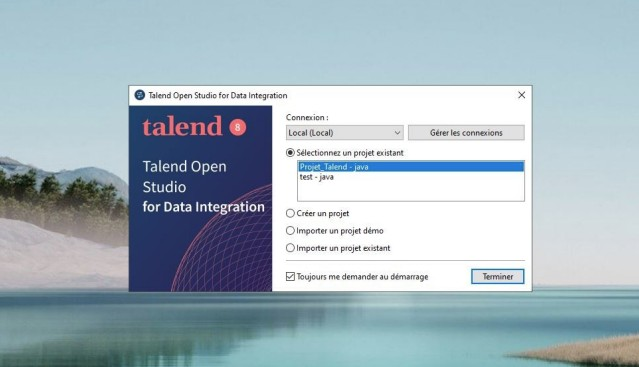
Présentation du projet
Ce projet a été réalisé dans le cadre de l’unité d’enseignement « Valoriser une production dans un contexte professionnel ». L’objectif était de produire un guide complet sur le logiciel Talend, à destination d’un public varié. Le travail incluait :
✅ Une présentation claire des concepts fondamentaux (jobs, pipelines, composants).
✅ Une explication pas à pas de l’installation et de la première utilisation.
✅ Des conseils pratiques et des recommandations pour optimiser son usage de Talend.
Fonctionnalités du livrable
📘 Guide illustré – Explication visuelle des étapes clés avec captures d'écran.
🧰 Glossaire technique – Définitions accessibles des principaux termes utilisés dans Talend.
⚙️ Composants expliqués – tFileInput, tLogRow, tFileOutput, tFilterColumn, etc.
🔒 Conseils de sécurité – RGPD, HIPAA, sauvegardes et tests rigoureux.
Résultats
✅ Guide terminé et validé dans les temps.
✅ Document clair, pédagogique et réutilisable par d’autres étudiants.
✅ Familiarisation approfondie avec les outils ETL et l’environnement Talend.
Analyse juridique et technique d'une PME numérique
J'ai réalisé une étude de cas portant sur la gestion des risques informatiques dans une PME. Ce travail mêlait aspects juridiques, analyse des menaces et propositions de mesures techniques et organisationnelles, en conformité avec les normes ISO et le RGPD.
Cas pratique – Gestion des risques informatiques
Janv - Mars 2025UE3-S5Technologies : Analyse juridique, RGPD, ISO/IEC 27001
Présentation du projet
Ce projet consistait à étudier les risques numériques encourus par une entreprise fictive spécialisée dans la vente de jouets en bois en ligne. L’étude, structurée en trois volets, portait sur l’indisponibilité du site web, la fuite de données personnelles clients et l’interruption des livraisons, le tout à la lumière des normes ISO/IEC 27001 & 27005, du RGPD et des directives européennes.
Thématiques abordées
🔐 Confidentialité & RGPD – Application des principes de Privacy by Design / Default.
🧠 Analyse des risques – Élaboration d’une matrice d’impact/probabilité selon l’ISO 27005.
Programmation orientée objet et interface graphique
Projet dont l’objectif était de concevoir un jeu de dame en Java avec une interface graphique interactive. Ce projet a permis d’approfondir la logique objet, la gestion des événements et la construction d’une interface utilisateur conviviale.
Jeu de Dame – Projet Java orienté objet
Janv - Mars 2024UE4-S4Technologies : Java, Swing, POO
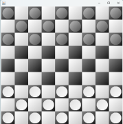
Présentation du projet
Dans ce projet, j'ai conçu un jeu de dame entièrement en Java, respectant les règles classiques (déplacement, prise en diagonale, promotion en dame). Le projet a été structuré avec des classes dédiées à chaque composant : grille, cases, pions, règles. Une interface graphique a été développée avec Java Swing pour rendre le jeu interactif et ergonomique.
Fonctionnalités principales
♟️ Mouvements & prises – Gestion complète des déplacements et captures selon les règles officielles.
🖼️ Interface graphique (Swing) – Plateforme visuelle fluide avec mise à jour dynamique du plateau.
Développement collaboratif et composants modulaires
Ce travail collectif visait à concevoir un outil de gestion et de suivi de centrales photovoltaïques. Chaque élève devait développer un composant fonctionnel, intégré à un serveur web principal, en suivant un cahier des charges précis.
SAÉ 6. VCOD.01 – Développement d’un outil décisionnel
Avril - Juin 2025UE4-S6Technologies : HTML, CSS, JavaScript, Git
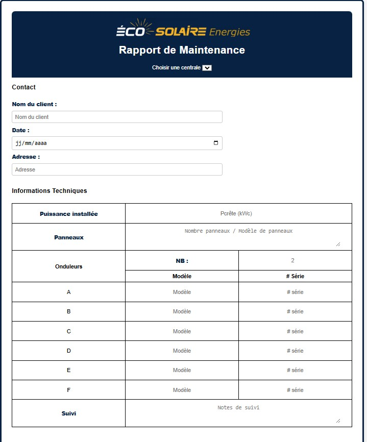
Présentation du projet
Le but du projet était de créer un outil décisionnel modulaire permettant le suivi de centrales photovoltaïques. Le travail était distribué entre les étudiants, chacun développant un composant indépendant (formulaire, carte, calendrier, etc.) à intégrer dans une plateforme centralisée via un serveur Web sécurisé.
Fonctionnalités clés
✅ Développement d’un composant individuel – Mise en œuvre d’un formulaire complet avec validation et interactions dynamiques.
✅ Intégration collaborative – Synchronisation du code via Git pour permettre une intégration fluide dans le projet global.
✅ Respect du cahier des charges – Conformité stricte aux exigences HTML, CSS et JS (fonctions requete() et enregistrer()).
Résultats
✅ Composant fonctionnel intégré avec succès dans l’application globale.
✅ Expérience professionnelle du travail collaboratif avec gestion de versions (Gitlab).
✅ Respect du planning et des exigences techniques définies dans le cahier des charges.
Dans le cadre de mon stage au Musée Soulages, j’ai rédigé une charte de protection des données personnelles conforme au RGPD. Cette charte interne vise à garantir la confidentialité des données collectées auprès des employés, des visiteurs et des partenaires du musée.
Charte RGPD – Projet de stage au Musée Soulages
Février - Mai 2025Stage – Musée SoulagesThématique : Protection des données personnelles
Présentation du projet
Durant mon stage, j’ai rédigé la charte de protection des données personnelles du Musée Soulages. Elle formalise les bonnes pratiques à adopter par les agents dans le cadre de la gestion des données personnelles, en conformité avec le RGPD et la Loi Informatique et Libertés.
Contenu de la charte
📋 Définition des finalités – RH, billetterie, partenariats, ateliers, etc.
🔐 Sécurité & confidentialité – Contrôle des accès, sauvegardes, sensibilisation du personnel.
📁 Droit des personnes – Accès, rectification, opposition, limitation, portabilité.
🕓 Durées de conservation – Respect des obligations légales (5 à 10 ans selon les cas).
📬 Procédures internes – Réponse aux demandes RGPD, désignation future d’un DPO.
Résultats
✅ Charte complète rédigée et validée par l’équipe du musée en conseil d'administration.
✅ Support de référence pour les futurs recrutements et formations internes.
✅ Valorisation du respect du RGPD dans un contexte culturel et administratif.
Link copied to clipboard!
/app/index.html?project=taptether
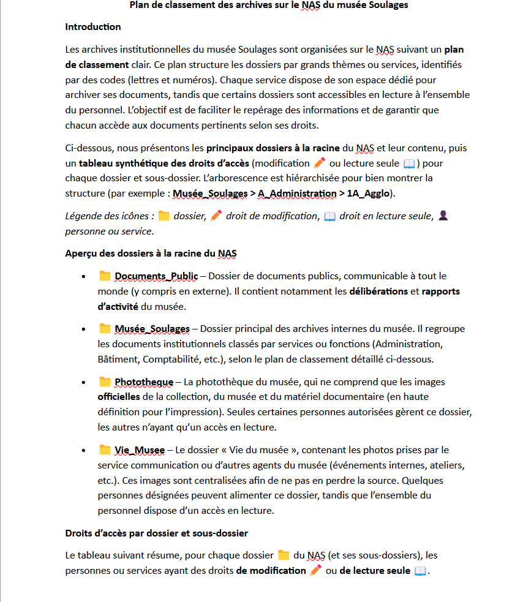
Matrice NAS
Organisation hiérarchisée & gestion des droits
Dans le cadre de mon stage au musée Soulages, j’ai été chargé de concevoir une matrice complète des droits d'accès pour le nouveau serveur NAS. Cette mission impliquait de structurer les répertoires selon un plan hiérarchique, d'attribuer les droits à chaque service, et de garantir la sécurité documentaire tout en facilitant le travail collaboratif.
Matrice des droits d’accès – NAS Musée Soulages
Durée : Avril - Mai 2025Stage professionnelOutil : Excel, Documentation Word
Présentation du projet
Cette mission s’inscrit dans une logique de structuration de l’espace de stockage du musée Soulages. Le but était de fournir une arborescence claire et sécurisée, en définissant des niveaux d’accès précis pour chaque dossier selon les fonctions des utilisateurs (lecture seule, modification ou restriction totale).
Fonctionnalités du livrable
🗂️ Plan de classement hiérarchisé – Dossiers classés par service, activité ou fonction, codifiés pour simplifier l’accès.
🔐 Matrice de droits d’accès – Attribution des droits en lecture/écriture selon les responsabilités du personnel (direction, communication, conservation, etc.).
📄 Documentation claire – Création d’un document Word explicatif et d’un tableau Excel synthétique consultable par les équipes.
👥 Gestion collaborative – Harmonisation des accès pour favoriser le travail inter-services sans compromettre la sécurité.
Résultats
✅ Mise en place d’un système clair, sécurisé et documenté.
✅ Réduction des erreurs d’accès et amélioration de la traçabilité des documents.
✅ Adoption facilitée par l’ensemble des services du musée.